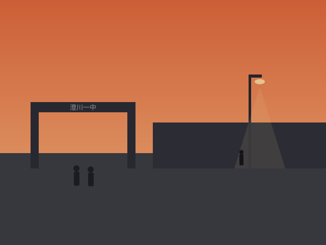
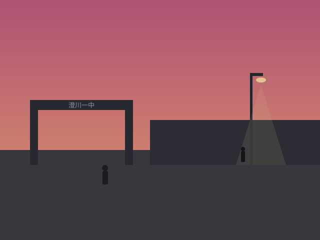

放学路上的晚霞（手机拍的，糊）
北窗 » 相册 打印版
返回
楼主 一粒盐 发表于 2009-4-23 18:52
今天的晚霞好红！手机拍的凑合看

放学路上的晚霞（点击查看大图）
沙发 老K 发表于 2009-4-23 19:30
构图不错，下次别手抖
板凳 一粒盐 发表于 2009-5-8 18:47
又是晚霞～

又是晚霞（点击查看大图）
地板 老K 发表于 2009-5-8 22:15
第二张路灯下那个人，第一张好像也有。
5# 一粒盐 发表于 2009-5-8 22:18
？？？别吓我
6# 纸鸢 发表于 2009-5-8 22:40
别放大了，没什么好看的。